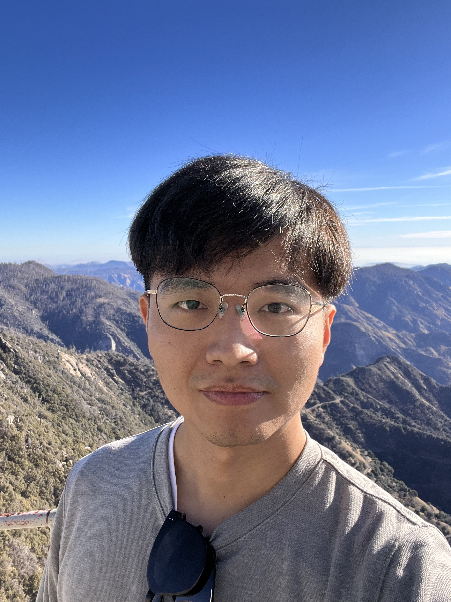

I am a PhD Candidate in Electrical and Computer Engineering at the University of California San Diego, advised by Prof. Yang Zheng. I expect to graduate in Fall 2026 and am exploring opportunities. I obtained my MS in Communication Engineering from National Taiwan University, advised by Prof. See-May Phoong, and my BS in ECE from National Yang Ming Chiao Tung University.
I am broadly interested in the theory of optimization and sequential decision-making under uncertainty, with applications in stochastic, robust, and nonstochastic control. My current research has two main threads.
Online prediction and control for dynamical systems. I study sequential prediction and online nonstochastic control using tools from online convex optimization, developing algorithms with provable guarantees that adapt across adversarial, nonstationary, and benign environments. I also design and analyze data-driven predictive control algorithms for Koopman-linearizable nonlinear systems with provable dynamic regret guarantees.
Convex and nonconvex optimization in control. I study optimization landscapes of classical optimal and robust control from a policy optimization perspective, including the Linear Quadratic Regulator (LQR) and \( \mathcal{H}_\infty \) robust control. With collaborators, I have developed a unified Extended Convex Lifting framework that reveals hidden convexity, bridging nonconvex policy optimization and classical Riccati theory and convex reformulations.
Previously, I worked on reward-free exploration in reinforcement learning, specifically online active model estimation for Markov decision processes, and on signal processing for communication systems during my MS.
I was an Audio R&D Intern at Qualcomm in Summer 2025, working on active noise cancellation algorithms for earbuds. I combined ideas from optimization, robust control, and signal processing to develop practical solutions.
Teaching Assistant at UCSD:
Teaching Assistant at NTU: